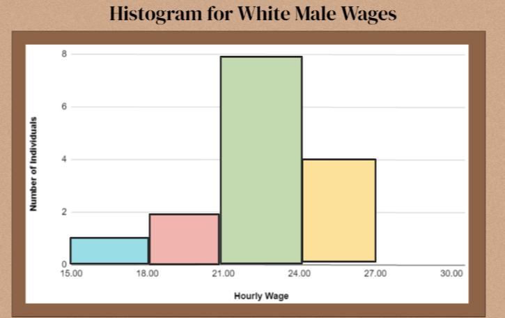
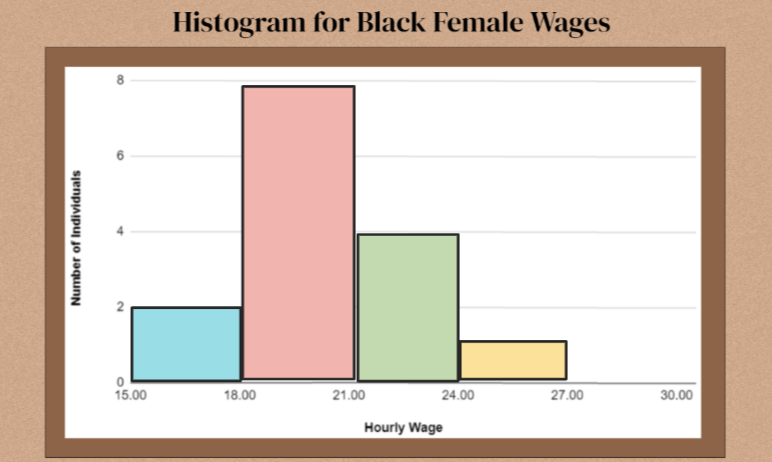

Wage Gap Math Project
by Belinda and Mr. M.
Do you believe everyone gets paid the same amount, no matter what their skin color or gender? Unfortunately till this day that answer is no. Women and people of color get paid less for doing the same work than white men get paid.
When this country began, most people of color in the South did not get paid at all because they were slaves. When slavery ended, some people thought that country would now be fair. Even though “white” people didn’t like “colored” (black) people and did not want to live close to them and engage with them, the idea was to be "separate but equal".
As for women, when the country began women stayed in the home and raised families, so they did not get paid at all. During World War two, many men went to fight so women started taking paying jobs. When the war was over and men came back, women who kept working expected to be paid what men were paid for the same job.
But "equal" never happened. “Black” people get paid less, and women get paid less even when they are more skilled than men (National Partnership for Women). This is so sad, and miserable but so far they can't do a lot about it but get angry.
The Honors Math Project
One way to start doing something about it is to know the math needed to talk about the problem to people who might be able to make a difference. That's what Lyceum Prep Math teacher Maria Antonellis taught her Honors Math students to do:
Who's paid more, by how much?
White men are often paid more than a Black women. In a Pew Research study from 2015, the wage gap between women and men was about $4/hour, and between Hispanic men and White men, $7/hour. The gap between White men and Hispanic women was $9/hour.
But how did Pew Research do these calculations? The math behind such graphs was the focus of Ms. Antonellis Math Honors project.
Below are some charts Ms. A's students worked with to show racial wage gaps. Ms. A focused on Black rather than Hispanic racial gaps for her project. The charts are called histograms. I thought "histo" meant it was a graph collecting historical data, but it really means a graph of bars of different heights.
Histogram for White Male Wages
Histogram for Black Female Wages
The Emotional Impact of Math
Here's what one student, Deyvid, said after completing the project:
After completing the histogram for the white male wages, I found that most individuals fall between (making) $21.00 and $24.00. After completing the histogram for the black female wages, I found that most individuals fall between (making) $18.00 and $21.00.
After completing the box and whisker plot for white male wages I observed that the range is from $27.00-$18.00, After completing the box and whisker plot for black female wages I observed that the range is from $17.00-$23.00 (IT DOESN’T EVEN REACH THE TO THE LOWEST OF THE WHITE MALE’S WAGES!!!) (Note to self) I'M ANGRY NOW >:(
Learn More
Netflix and Vox Media Studios did a documentary about this topic Senator Cory Booker and others discuss how slavery, housing discrimination and centuries of inequality have compounded to create a racial wealth gap. Here is a 16-minute summary video which I recommend: